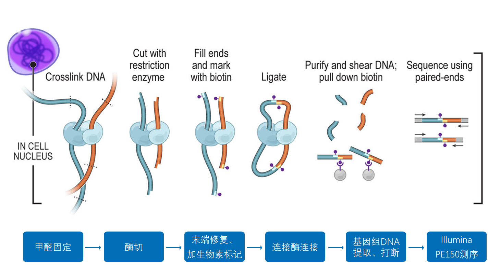

前言
DNA 虽然是一条线性分子，却会在细胞核内折叠成有层次的三维结构。这种折叠并非完全随机：同一条染色体上相邻的区域通常更容易接触，远距离调控元件也可能通过染色质环与靶基因靠近。Hi-C（High-throughput Chromosome Conformation Capture）利用交联、酶切、邻近连接和双端测序，捕获这些空间上相邻的 DNA 片段。

每个有效 read pair 的两端分别定位到参考基因组的两个位置，因而可以记作一次空间接触。将基因组划分为固定大小的区间（bin），再统计任意两个 bin 之间的有效 read pairs，就得到 Hi-C 接触矩阵。矩阵中的每个像素表示两个区域的接触强度。
IO 与分析流程
输入文件
| 输入 | 示例 | 说明 |
|---|---|---|
| 最终参考基因组 | hic_scaffolds_final.fa | 需要研究的参考基因组文件。 |
| Hi-C R1 | HIC_L1_R1.fastq.gz | 每个 lane 的正向 reads。 |
| Hi-C R2 | HIC_L1_R2.fastq.gz | 必须与同一 lane 的 R1 一一配对。 |
计算流程
Hi-C FASTQ ── FastQC ── MultiQC
│
├── lane 1 ── BWA-MEM -5SP ── pairtools parse/sort ── lane1.pairs.gz
├── lane 2 ── BWA-MEM -5SP ── pairtools parse/sort ── lane2.pairs.gz
└── lane n ── BWA-MEM -5SP ── pairtools parse/sort ── lanen.pairs.gz
│
▼
pairtools merge ── dedup ── select UU
│
▼
最终 scaffold FASTA ── chrom.sizes ── cooler cload ── contacts.cool
│
balance / zoomify ▼
contacts.mcool各步骤的作用
- FastQC/MultiQC：汇总原始 reads 的质量、GC、接头和重复水平，只做质控，不修改 FASTQ。
- BWA-MEM：以
-5SP模式将每组 paired-end reads 比对至最终 scaffold，并保留 Hi-C 嵌合 reads 的合理比对。 - pairtools parse/sort：从 SAM 流中提取两端坐标，按参考序列过滤并生成排序后的
.pairs.gz。 - merge/dedup/select：合并 lane，以 3 bp 容差识别重复，并选择两端均唯一比对的
UUcontacts。 - cooler：按 bin 汇总有效 contacts，构建基础分辨率
.cool，执行矩阵平衡并生成多分辨率.mcool。
--mapq 默认设为 30，用于降低多重比对的影响；--bin-size 默认 10 kb，是基础矩阵分辨率。分辨率越高，所需有效 contacts 和计算资源越多。全基因组总览通常选用 50–500 kb，局部结构分析才使用更细的 bin。
输出文件
| 文件 | 用途 | 类型 |
|---|---|---|
qc/multiqc_report.html | 所有 FASTQ 的汇总质控报告。 | 质控 |
pairs/all.dedup.pairs.gz | 去除重复后的 Hi-C contacts。 | 中间文件 |
pairs/all.valid.UU.pairs.gz | 两端均唯一比对、用于建矩阵的有效 contacts。 | 关键中间文件 |
pairs/dedup.stats.txt | 重复识别统计。 | 质控 |
pairs/valid.stats.txt | 有效 contacts 的配对类型、顺反式距离等统计。 | 质控 |
cool/contacts.10000.cool | 默认 10 kb 基础分辨率矩阵。 | 核心结果 |
cool/contacts.mcool | 包含多个分辨率的矩阵，可用于交互式浏览和绘图。 | 最终结果 |
cool/contacts.resolutions.txt | 记录 .mcool 中实际可用的分辨率。 | 索引信息 |
pipeline.log | 完整命令及报错信息。 | 运行记录 |
脚本与环境
下载环境文件后可使用 mamba 或 conda 创建环境。环境名称为 hic-contact，主要依赖包括 BWA、samtools、pairtools、cooler、FastQC、MultiQC、NumPy 和 Matplotlib。
mamba env create -f environment.yaml
conda activate hic-contact
python hic_contact_map.py \
--search-dir /path/to/HIC_FASTQ \
--fasta /path/to/hic_scaffolds_final.fa \
--outdir /path/to/hic_contact_result \
--threads 32 \
--mapq 30 \
--bin-size 10000 \
--zoom-resolutions 10000N10000N 表示 cooler 从 10 kb 开始自动生成一组常用的整数倍分辨率。可用 cooler ls hic_contact_result/cool/contacts.mcool 查看结果。若数据不适合矩阵平衡，可添加 --no-balance；若已单独完成原始数据质控，可添加 --skip-fastqc。
断点恢复
再次运行脚本并指定相同输入和 --outdir，流程会通过完成标记和非空结果文件跳过已经成功的步骤，从首个未完成步骤继续。不要在恢复时更换 FASTA、FASTQ、bin size 或输出目录；若确实要改变关键参数，建议使用新的输出目录，避免旧结果被误用。
可视化绘图
结果检查与解释
正常的染色体级接触图应在每条染色体内部呈现连续、较强的主对角线，且信号通常随线性距离增加而衰减；不同染色体之间的互作背景应明显更弱。若用于检查组装，主对角线突然中断、远离对角线的强矩形块、蝴蝶形或交叉信号，可能提示 scaffold 的错误连接、倒置或排序问题。
热图只能提供证据，不能单独证明组装正确。应同时检查有效 contacts 数、唯一比对率、重复率、cis/trans 比例和不同距离区间的接触衰减，并结合预期染色体数、共线性、遗传图谱或其他物种学证据判断。高分辨率矩阵出现空洞不一定是结构异常，也可能只是测序深度不足或该区域可比对性较差。